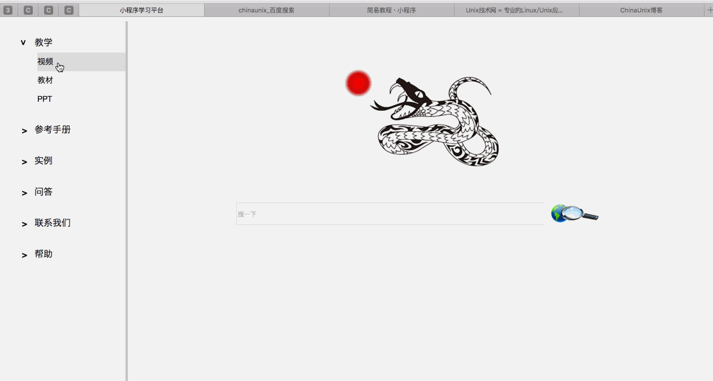
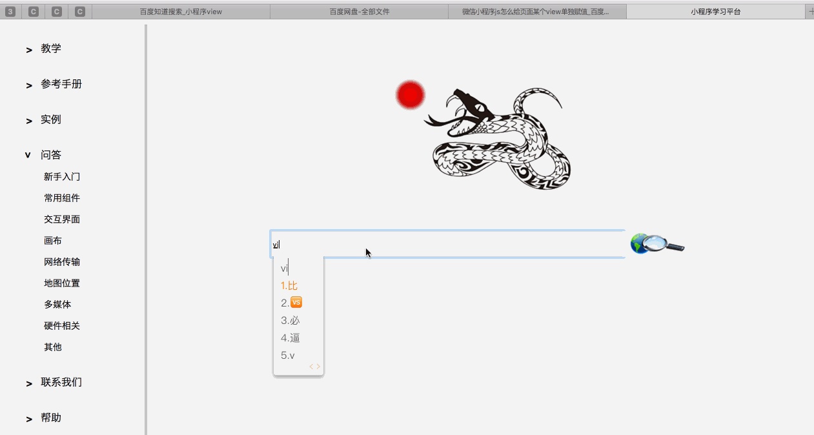
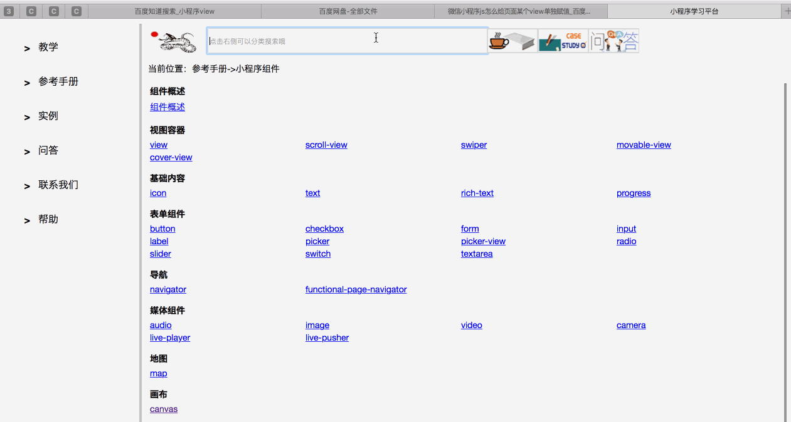
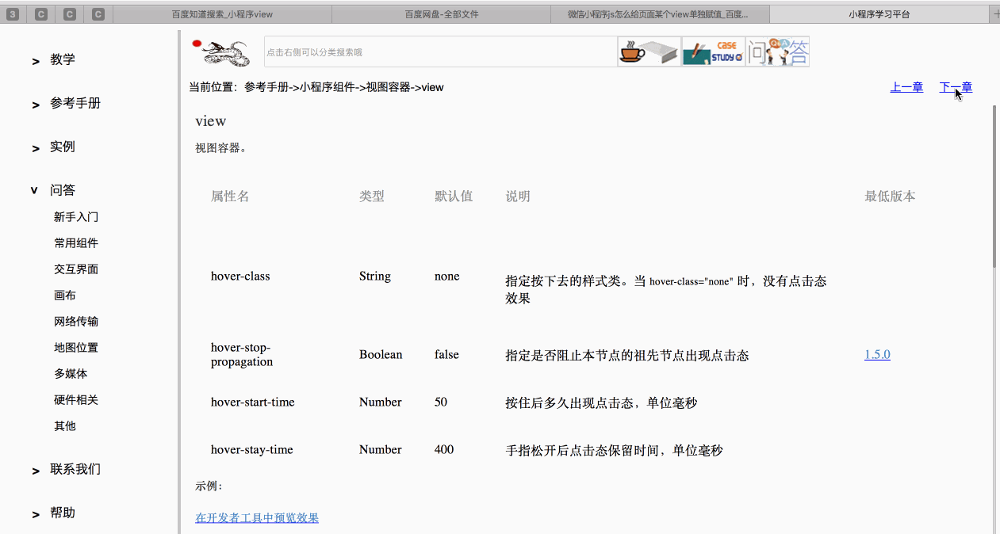
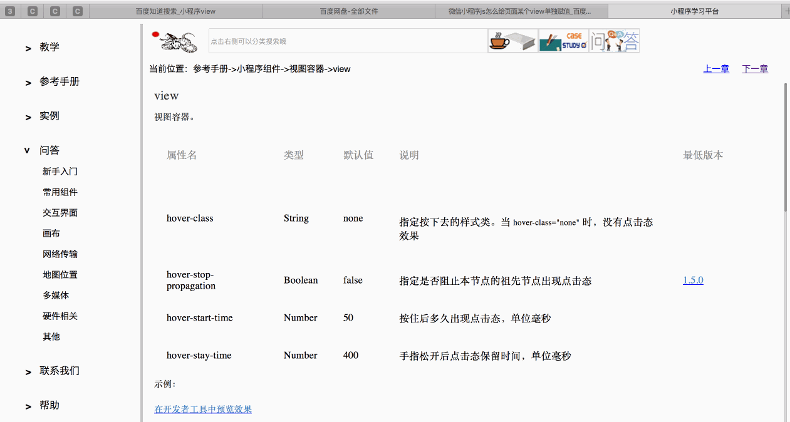

1、平台预览

2、搭建好Apache之后，在浏览器输入回环地址“127.0.0.1”即可访问
3、在主页的搜索框输入想要的内容，可以实现全局搜索（在手册、案例、问答中搜索你的内容，目前不支持搜索视频）

4、在每一个分类页面的最上边，有输入框，点击右侧按钮可以实现分类搜索（搜手册、搜案例、搜问答）

5、浏览手册的时候可以点击右上角，实现快速翻页（目前只支持同类手册快速翻页）

6、点击搜索框左侧的logo，可以快速回到主页

7、帮助文档中可以看到更新日志